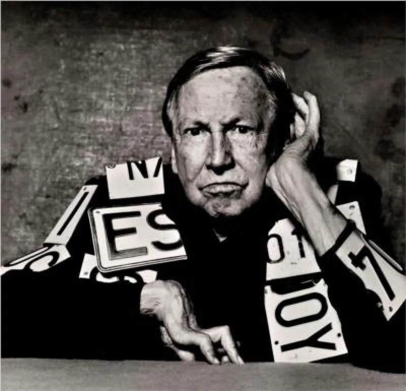

<!DOCTYPE html>
<html lang="fr" x-data="{menuIsOpen: false}" :class="{noscroll:menuIsOpen,}"></html>
<html lang="fr">
<head>
    <meta charset="UTF-8">
    <meta http-equiv="X-UA-Compatible" content="IE=edge">
    <meta name="viewport" content="width=device-width, initial-scale=1.0">
    <title>Daay'o</title>
    <script defer src="https://unpkg.com/alpinejs"></script>
    <link rel="stylesheet" href="../src/css/style.css">
    
</head>
<body>

    <header>

        <button aria-controls="mainNav" @click="menuIsOpen = ! menuIsOpen"
        class="header__icone--menu-burger">
        
        </button>
        <nav
        id="mainNav" x-show="menuIsOpen" x-transition.duration.800ms class="menu">

        <ul>
            <li><a class="menu__list" href="./serguei_paradjanov.html">Sergueï paradjanov</a></li>
            <li><a class="menu__list" href="./leonid_sejka.html">Leonid Sejka</a></li>
            <li><a class="menu__list" href="./robert_rauschenberg.html">Robert Rauschenberg</a></li>
            <li><a class="menu__list" href="./jospeh_beuys.html">Joseph Beuys</a></li>
            <li><a class="menu__list" href="./billeterie.html"> Billetterie</a></li>
        </ul>
        </nav>

        <a href="../en/home_page.html">
            
        </a>

        <a href="./index.html"><h1 class="header__nom--site">Daay'o</h1></a>

    </header>

    <div>
        
        <h2 class="titre__article--robert">Robert Rauschenberg</h2>
    </div>

    <main>

        <section class="block__article">

            <h2 class="titre__page-article-robert">Sa vie</h2>

            <p class="text__page-article-robert">
                Robert Milton Ernest Rauschenberg, né le 22 octobre 1925 à Port Arthur, Texas, et mort le 12 mai 2008 à Captiva, Floride, 
                est un artiste plasticien américain.
            </p>

            <p class="text__page-article-robert">
                Il appartient au mouvement Neo-Dada est l'un des précurseurs du Pop art ; ses réalisations vont de la peinture à la gravure, 
                en passant par la photographie, la chorégraphie et la musique.
            </p>

            <p class="text__page-article-robert">
                Robert Milton Ernest Rauschenberg est né à Port Arthur, Texas, une ville dont la principale activité économique était le raffinage du pétrole. 
                Son grand-père est un médecin allemand qui avait épousé une Indienne cherokee. Il grandit dans une famille pauvre.
            </p>

            <p class="text__page-article-robert">
                Après des études de pharmacie à l'Université du Texas à Austin, il est incorporé dans l’armée américaine au cours de la Seconde Guerre mondiale. 
                Il intègre le Navy Hospital Corps de San Diego en Californie. Rauschenberg s’inscrit au Kansas City Art Institute (en) où il étudie la peinture, 
                l’histoire de l’art, la composition, la sculpture, la musique, l’anatomie et la mode de 1947 à 1948. Plus tard, il rencontre Willem de Knooning ; 
                cette rencontre sera décisive pour son œuvre.
            </p>

            <p class="text__page-article-robert">
                En 1948, il part étudier l’art à Paris à Académie Julian, où il tombe amoureux de la jeune peintre américaine Susan Weil (en). 
                Il l’épouse au printemps 1950, c'est elle qui servira de modèle à ses œuvres en cyanographie. Le couple a un fils prénommé Christopher, avant de se séparer. 
                Il poursuit sa formation artistique au Black Mountain College (Caroline du Nord) où il assiste aux cours de Josef Albers, de John Cage et de Merce Cunningham. 
                Dès cette période, Cage, Cunningham et Rauschenberg deviennent extrêmement proches.
            </p>

            <p class="text__page-article-robert">
                Il étudie également à l’Art Students League of New York aux côtés de Morris Kantor et Vaclav Vytlacil. 
                C'est à l'Art Students League of New York qu'il fait la rencontre des peintres Knox Martin et Cy Twombly. 
                En 1951, a lieu sa première exposition à la Betty Parsons Gallery de New York où aucune de ses œuvres n'est vendue.
            </p>

        </section>

        <section class="block__article">

            <h2 class="titre__page-article-robert">articles sur différentes oeuvre qu'a produit Robert Rauschenberg</h2>

            <div class="motif_barre-barre--droite-article"></div>
            <h3 class="description__oeuvre">Sue</h3>
            
            <h3 class="description__oeuvre-date">1950</h3>
            <a href="./robert_oeuvre_sue.html"><p class="redirection__page-oeuvre">Cliquez ici pour en décourvir plus sur l'oeuvre</p></a>

            <div class="motif_barre-barre--gauche-article"></div>
            <h3 class="description__oeuvre">Signs</h3>
            
            <h3 class="description__oeuvre-date">1969</h3>
            <a href="./robert_oeuvre_signs.html"><p class="redirection__page-oeuvre">Cliquez ici pour en décourvir plus sur l'oeuvre</p></a>

            <div class="motif_barre-barre--droite-article"></div>
            <h3 class="description__oeuvre">Banner Stoned Moon</h3>
            
            <h3 class="description__oeuvre-date">1970</h3>
            <a href="./robert_oeuvre_banner.html"><p class="redirection__page-oeuvre">Cliquez ici pour en décourvir plus sur l'oeuvre</p></a>
            <div class="motif_barre-barre--gauche-article"></div>

        </section>

    </main>
   
    <footer>

        <a href="./index.html"><h1 class="footer__nom-site">Daay'o</h1></a>

        <ul>
            
            <li class="footer__pages-annexes">
                <a href="./a_propos.html">A propos</a>
            </li>

            <li class="footer__pages-annexes">
                <a href="./contact.html">Contact</a>
            </li>
        </ul>

        <ul class="footer__reseaux">
            <li>
                <a href="">
                    </a>
            </li>

            <li>
                <a href="">
                    </a>
            </li>

            <li>
                <a href="">
                    </a>
                </li>
        </ul>

        <a class="footer_mailto" href="">event-daayo@gmail.com</a>

        <p class="footer__copyright">Copyright © 2023-Faris Halepovic-MMi 1A2 Montbéliard</p>

    </footer>
    
</body>
</html>